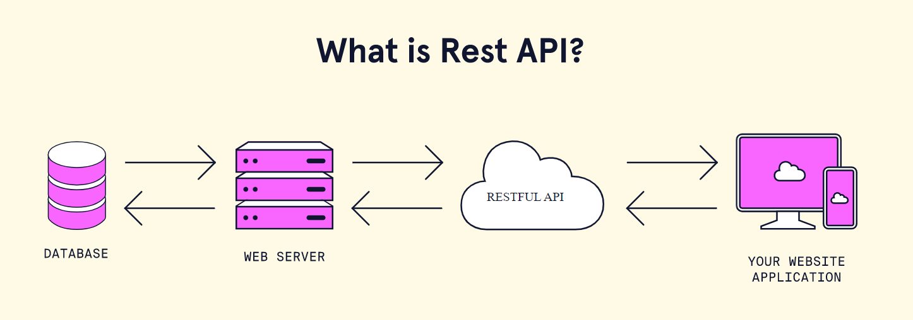

Full-Stack Architecture
One of the more difficult parts of this project will be understanding the big picture of how everything works together.
Many of the concepts of a full-stack architecture are explained in the Full-stack Overview from Web 201. However, the architecture from that course is not exactly the same as the architecture for the UCT Locator.
There are two basic parts of the product: the front-end, and the back-end. The two parts run separately, and each uses npm. You can think of them as two separate applications: the front-end is the client, and the back-end is the server. They are connected via HTTP, and generally follow the REST API paradigm.
Structure
The overall product follows a client-server architecture. The back-end connects to the database, and the front-end connects to the back-end via HTTP. The REST API looks something like this:

Essentially:
- A user visits the front-end (surfaced as a website)
- The front-end figures out what the user wants to do, and makes a request through HTTP to the back-end
- The back-end server takes that request, talks to the database as needed, and sends back a response
- The front-end then takes that response, and responds to the user appropriately
NPM
Both the front-end and back-end use npm to run. NPM stands for Node Package Manager - it is a tool that allows developers to include libraries (or packages) of code that other people have written. It can also be used to manage and run projects. This video provides a quick introduction.
For the UCT Locator, there are two important npm scripts:
- back-end:
npm run server- Executing this command in the back-end directory will run the back-end application locally
- front-end:
npm run start- Executing this command in the front-end directory will run the front-end application locally
In Visual Studio Code, these scripts should be runnable in the NPM SCRIPTS section.
Full-Stack Starter: Authentication Application
This project started as a basic MERN Auth application, following this tutorial. More information about the authentication process, and overall starter application, may be found there.